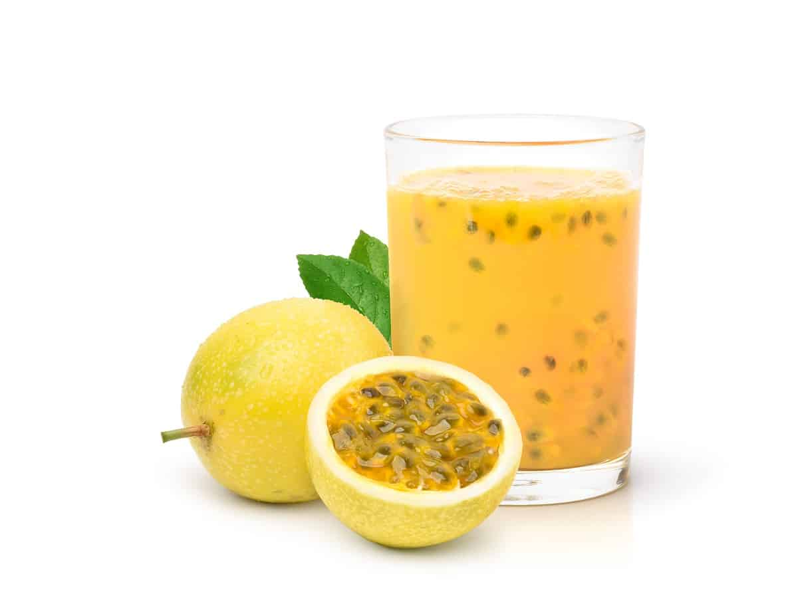

Brisa Tropical: Un Refrescante Abrazo de Maracuyá
Imagina un escape a un oasis tropical con cada sorbo de Brisa Tropical, una explosión de sabor que captura la esencia de la maracuyá en una bebida deliciosamente refrescante. Brisa Tropical comienza con una base de jugo de maracuyá fresco, cuidadosamente seleccionado por su intenso aroma y acidez vibrante. Esta base se complementa con un toque de miel pura, que agrega un dulzor sutil y equilibra la acidez natural de la fruta. Para realzar aún más el sabor, incorporamos un chorrito de jugo de limón fresco, aportando un toque cítrico que despierta las papilas gustativas. Unas pizcas de jengibre molido añaden un toque picante y especiado, mientras que una pizca de sal marina realza los sabores frutales y crea una experiencia sensorial completa.
